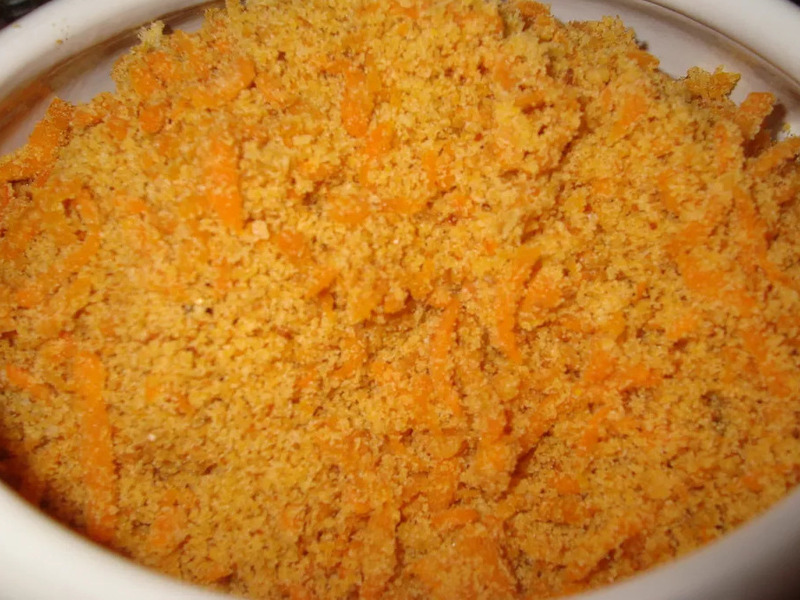

Farofa

Ingredientes
- 1 cebola ralada
- 1\2 cenoura ralada
- Farinha de mandioca fina
- Manteiga e azeite para refogar
Modo de Preparo
- Refogar a cebola na mistura de azeite e manteiga;
- Adicionar a cenoura e refogar um pouco;
- Adicionar aos poucos a farinha ate obter a quantidade desejada;
- Deixar no fogo ate a farinha comecar a escurecer e mudar de textura.
Dica: Se nao gostar dos vegetais na farofa, ao inves de ralar, corte-os em pedacos grandes. Quando a farofa estiver pronta, sera possivel separa-los e retira-los.